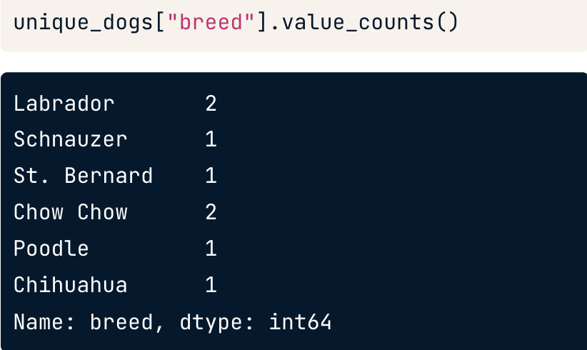
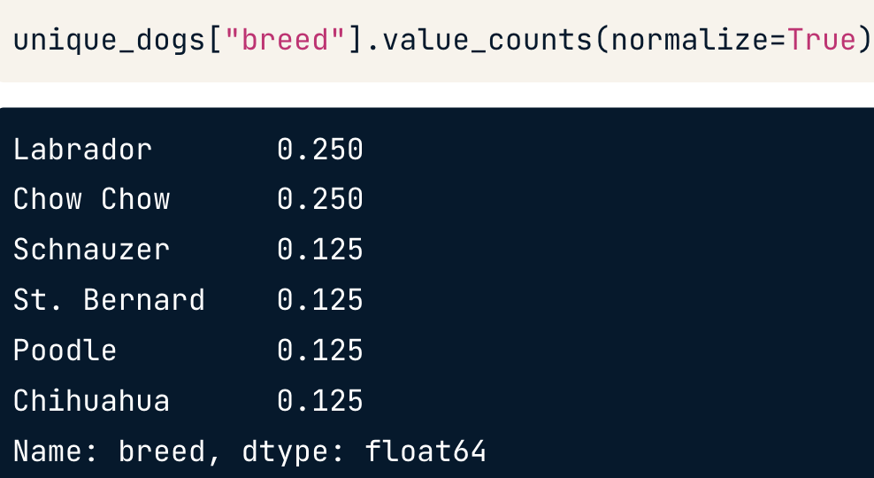
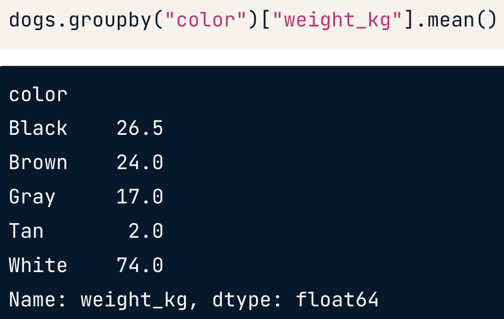
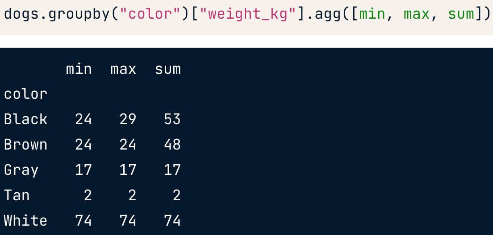
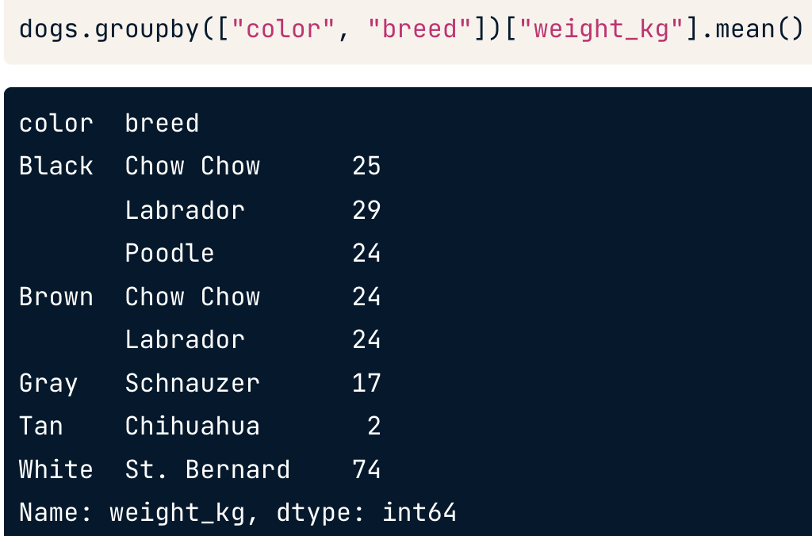
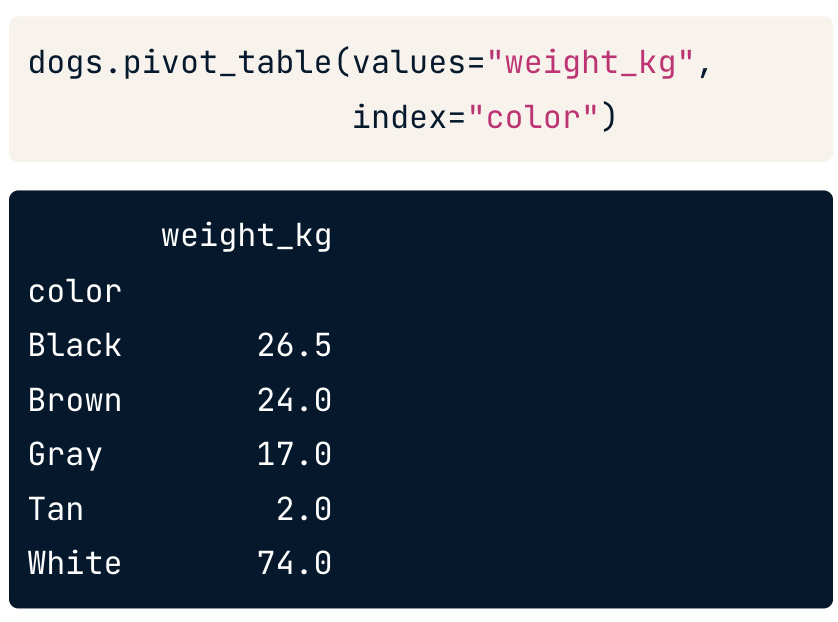
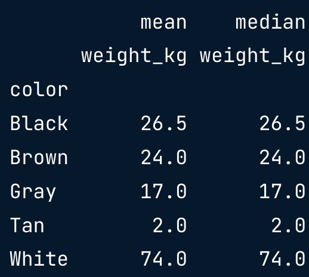
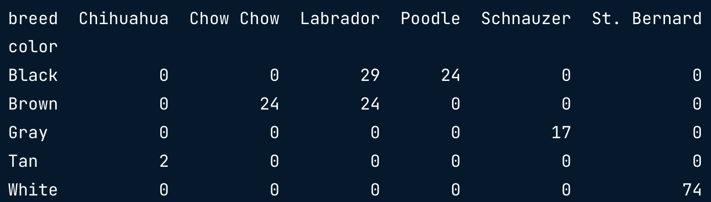
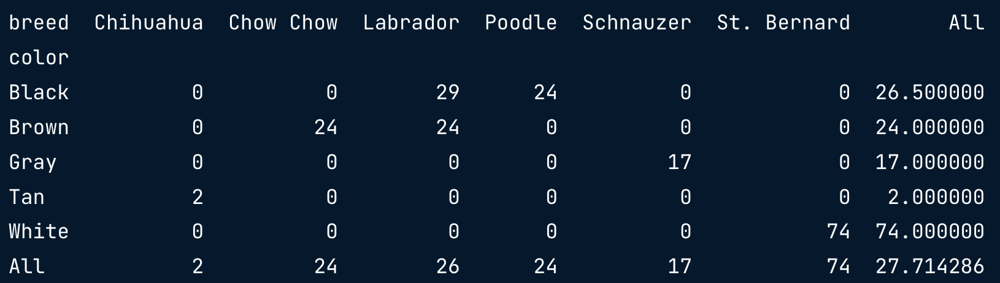

Data Manipulation with pandas
1. Transforming DataFrames
Introducing DataFrames
-
pandas: Python package for data manipulation. it can also be
used for data visualization.
-
built on top of two essential Python packages, NumPy and
Matplotlib
-
NumPy: provides multidimensional array objects for
easy data manipulation
-
Matplotlib: has powerful data visualization
capabilities
-
designed to work with rectangular data (aka "tabular data")
-
Exploring a DataFrame
-
.info(): displays the names of columns, the data types, and whether
they have any missing values
- .shape: number of rows and columns
-
.describe(): computes summary statistics for numerical columns (ex. mean,
median)
-
count: the number of non-missing values in each
column
-
Components of a DataFrame
-
.values: contains the data values in a 2-dimensional
NumPy array
- .columns: columns names
- .index: row numbers or row names
-
pandas Philosophy
-
The Zen of Python: There should be one - and preferably
only one - obvious way to do it.
-
-> pandas deliberately doesn't follow this philosophy.
(there are often multiple ways to solve a problem)
Sorting and subsetting
-
Sorting
-
.sort_values(column_name): change the order of the
rows
- ascending=False: 큰 수 -> 작은 수
-
we can sort by multiple variables
ex.dogs.sort_values(["weight_kg","height_cm"])
-
Subsetting multiple columns
- ex. dogs[["breed", "height_cm"]]
- ex. dogs[dogs["height_cm"] > 50]
- ex. dogs[dogs["date_of_birth"] > "2010-01-01"]
-
isin()
-
ex. is_black_or_brown = dogs["color"].isin(["Black",
"Brown"])
-
ex. colors = ["brown", "black", "tan"]
condition =
dogs["color"].isin(colors)
- cf. &: "bitwise and" orperator
New columns
-
Adding new column
- ex. dogs["height_m"] = dogs["height_cm"]/100
2. Aggregating DataFrames
Summary statistics
-
.agg: allows you to apply your own custom functions to a DataFrame, as
well as apply functions to more than one column of a DataFrame at
once
-
.quantile: returns percentiel
-
ex. def pct30(column):
return column.quantile(0.3)
dogs["weight_kg"].agg(pct30) //returns thirtieth percentile of
the dogs' weight
- ex. dogs[["weight_kg", "heigth_cm"]].agg(pct30)
-
ex. def pct40(column):
return column.quantile(0.4)
dogs["weight_kg"].agg([pct30, pct40])
-
.cumsum: cumulative sum. returns a whole column.
.cummax(): cumulative max # (위에서부터) 가장 큰 숫자
- ex. dogs["cum_weight"] = dogs["weight_kg"].cumsum()
- ex. dogs["cum_max_weight"] = dogs["weight_kg".cummax()
-
inter-quartile range: the 75th percentile minus the 25th
percentile.
Counting
-
.drop_duplicates(subset="column_name")
- ex. vet_visits.drop_duplicates(subset="name")
-
ex. unique_dogs = vet_visits.drop_duplicates(subset=["name", "breed"])
-
.value_counts()
- ex. unique_dogs["breed"].value_counts(sort=True)

-
to get proportions of the total
unique_dogs["breed"].value_counts(normalize=True)

Grouped summary statistics
-
.groupby(): for grouped summaries
- ex. dogs.groupby("color")["weight_kg"].mean()

-
multiple grouped summaries
-
ex. dogs.groupby("color")["weight_kg"].agg([min, max, sum])

-
Grouping by multiple variables
- ex. dogs.groupby(["color", "breed"])["weight_kg"].mean()

Pivot tables
- .pivot_table() method is an alternative to .groupby()
-
ex. dogs.pivot_table(values="weight_kg", index="color)
-
cf. by default, pivot_table takes the mean value for each
group.

-
aggfunc: for different statistics
-
ex. dogs.pivot_table(values="weight_kg", index="color",
aggfunc=np.median)
-
multiple statistics
-
ex. dogs.pivot_table(values="weight_kg", index="color",
aggfunc=[np.mean, np.median])

-
Pivot on two variables : to group by two variables, we can pass a
second variable name into the columns argument.
-
ex. dogs.pivot_table(values="weight_kg", index="color",
columns="breed", fill_value=0)

-
cf. dogs.groupby(["color",
"breed"])["weight_kg"].mean()
-
fill_value=0 -> NaN을 0으로 바꿔줌.
-
cf. what to replace missing values with is a topic big enough to
have its own course.
but
the simplest thing to do is to substitute a dummy value.
-
margins=True -> the last row and last column of the pivot
table contain the mean of all the values in the column or row (not
including the missing values that were filled with 0s.)

-
cf. the value in the bottom right, in the last row and last
column, is the mean weight of all the dogs in the dataset.
3. Slicing and Indexing DataFrames
Explicit indexes
-
Setting a column as the index
-
ex. dogs_ind = dogs.set_index("name")
-
Removing an index
-
ex. dogs_ind.reset_index() -> 원래 index는
column이 됨.
-
ex. dogs_ind.reset_index(drop=True) -> 원래 index는
사라짐
-
Indexes make subsetting simpler
-
ex. dogs[dogs["name"].isin(["Bella", "Stella"])]
-> dogs_ind.loc[["Bella","Stella"]]
- cf. loc filters on index values
- Index values don't need to be unique
-
Multi-level indexes a.k.a. hierarchical indexes
- you can include multiple columns in the index
- ex. dogs_ind3 = dogs.set_index(["breed", "color"])
-
there's an implication that the inner level of index is nested
inside the outer level.
-
Subset inner level with a list of tuples.
-
ex. dogs_ind3.loc[[("Labrador", "Brown"), ("Chihuahua", "Tan")]]
-
Sorting by index values
-
ex. dogs_ind3.sort_index()
-
ex. dogs_ind3.sort_index(level=["color", "breed"],
ascending=[True, False])
-
cf. problems
- Index values are just data
- Indexes violate "tidy data" principles
- You need to learn two syntaxes
Slicing and subsetting with .loc and .iloc
Working with pivot tables
4. Creating and Visualizing DataFrames